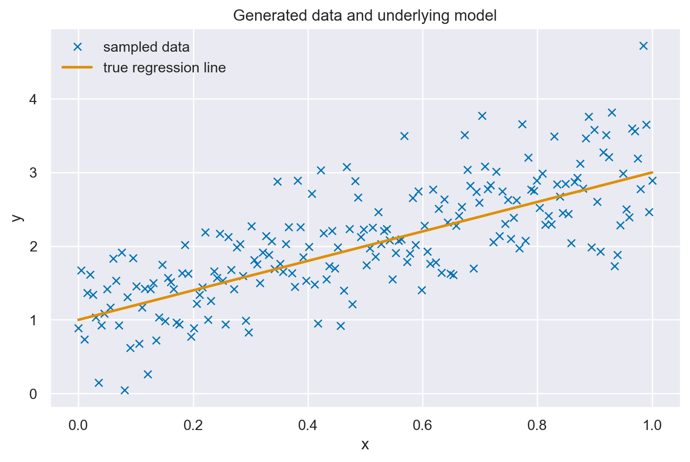

Zucchero sintattico#
I modelli lineari sono così ampiamente utilizzati che sono stati sviluppati appositamente una sintassi, dei metodi e delle librerie per la regressione. Una di queste librerie è bambi (BAyesian Model-Building Interface). bambi è un pacchetto Python progettato per adattare modelli gerarchici generalizzati lineari (di cui il modello lineare bivariato è un caso particolare), utilizzando una sintassi simile a quella presente nei pacchetti R, come lme4, nlme, rstanarm o brms. bambi si basa su PyMC, ma offre un’API di livello superiore.
In questo capitolo esploreremo come condurre un’analisi di regressione utilizzando bambi invece di PyMC.
Preparazione del Notebook#
import numpy as np
import pandas as pd
import matplotlib.pyplot as plt
import seaborn as sns
import bambi as bmb
import arviz as az
import xarray as xr
import warnings
warnings.filterwarnings("ignore", category=UserWarning)
warnings.filterwarnings("ignore", category=FutureWarning)
warnings.filterwarnings("ignore", category=Warning)
/var/folders/cl/wwjrsxdd5tz7y9jr82nd5hrw0000gn/T/ipykernel_21535/1905985274.py:2: DeprecationWarning:
Pyarrow will become a required dependency of pandas in the next major release of pandas (pandas 3.0),
(to allow more performant data types, such as the Arrow string type, and better interoperability with other libraries)
but was not found to be installed on your system.
If this would cause problems for you,
please provide us feedback at https://github.com/pandas-dev/pandas/issues/54466
import pandas as pd
%config InlineBackend.figure_format = 'retina'
# Initialize random number generator
RANDOM_SEED = 8927
rng = np.random.default_rng(RANDOM_SEED)
az.style.use("arviz-darkgrid")
sns.set_theme(palette="colorblind")
BAyesian Model-Building Interface#
Simuliamo i dati esattamente come abbiamo fatto nel capitolo precedente.
size = 200
true_intercept = 1
true_slope = 2
x = np.linspace(0, 1, size)
# y = a + b*x
true_regression_line = true_intercept + true_slope * x
# add noise
y = true_regression_line + rng.normal(scale=0.5, size=size)
data = pd.DataFrame(dict(x=x, y=y))
plt.plot(x, y, "x", label="sampled data")
plt.plot(x, true_regression_line, label="true regression line", lw=2.0)
plt.xlabel("x")
plt.ylabel("y")
plt.title("Generated data and underlying model")
plt.legend(loc=0);

PyMC ha una sintassi molto semplice ed espressiva che ci consente di costruire modelli arbitrari. Questo di solito è un vantaggio, ma può essere anche un peso. Bambi, invece, si concentra sui modelli di regressione, e questa restrizione porta a una sintassi e a caratteristiche più focalizzate. Bambi utilizza la sintassi di Wilkinson [WR73]. Inoltre, bambi implementa delle distribuzioni a priori ottimizzate, eliminando così la necessità di definirle esplicitamente. Tuttavia, se si preferisce un maggiore controllo sulle distribuzioni a priori, è possibile specificarle manualmente.
Per replicare il modello descritto nel capitolo Analisi bayesiana del modello di regressione lineare, possiamo utilizzare la seguente istruzione.
model = bmb.Model("y ~ x", data)
Sul lato sinistro della tilde (∼), abbiamo la variabile dipendente, e sul lato destro, le variabili indipendenti. Con questa sintassi, stiamo semplicemente specificando la media (μ nel modello lm di PyMC). Per impostazione predefinita, Bambi assume che la verosimiglianza sia gaussiana; è possibile modificarla con l’argomento family. La sintassi della formula non specifica la distribuzione delle priors, ma solo come sono associate le variabili dipendenti e indipendenti. Bambi definirà automaticamente delle priors (molto) debolmente informative per noi. Possiamo ottenere ulteriori informazioni stampando il modello Bambi.
print(model)
Formula: y ~ x
Family: gaussian
Link: mu = identity
Observations: 200
Priors:
target = mu
Common-level effects
Intercept ~ Normal(mu: 2.0759, sigma: 3.9401)
x ~ Normal(mu: 0.0, sigma: 6.8159)
Auxiliary parameters
sigma ~ HalfStudentT(nu: 4.0, sigma: 0.791)
La descrizione inizia mostrando la formula utilizzata per definire il modello, y ~ x, che indica come la variabile dipendente y è predetta dalla variabile indipendente x in una relazione lineare. La seconda riga specifica che si sta utilizzando una distribuzione gaussiana (normale) come funzione di verosimiglianza per il modello, il che implica l’assunzione che i residui del modello (le differenze tra i valori osservati e i valori predetti) seguano una distribuzione normale.
La terza riga menziona la funzione di collegamento, in questo caso l’identità, che non applica alcuna trasformazione al valore atteso della variabile dipendente. Questo è caratteristico dei modelli lineari, dove il valore atteso di y è direttamente modellato come una combinazione lineare delle variabili indipendenti (E(Y) = \alpha + \beta x). È importante notare che, nei modelli lineari generalizzati, la funzione di collegamento gioca un ruolo cruciale nel collegare il valore atteso della variabile risposta alla combinazione lineare delle variabili predittive.
Segue il numero di osservazioni utilizzate per adattare il modello, indicando la dimensione del dataset su cui il modello è stato allenato.
La parte successiva dell’output dettaglia i priors utilizzati per i parametri del modello. In Bambi, i priors sono assunzioni a priori sui valori dei parametri prima di osservare i dati. Questi priors aiutano a guidare l’inferenza, soprattutto in presenza di dati limitati o per regolarizzare il modello. L’intercetta (Intercept) ha un prior normale con media (mu) 2.0759 e deviazione standard (sigma) 3.9401, indicando la posizione iniziale attesa della linea di regressione e quanto ci si aspetta che vari. Il coefficiente della variabile x ha anch’esso un prior normale, centrato in zero con una deviazione standard ampia (6.8159), riflettendo incertezza su quale possa essere il vero effetto di x su y senza presupporre una direzione specifica dell’effetto.
La sezione finale riguarda i parametri ausiliari del modello, in questo caso il parametro sigma della distribuzione gaussiana, che rappresenta la deviazione standard dei residui del modello. Questo ha un prior HalfStudentT, che è una distribuzione che ammette solo valori positivi (essendo la deviazione standard sempre positiva), con un grado di libertà (nu) 4.0 e una scala (sigma) 0.791. Questo prior è scelto per la sua flessibilità e la capacità di gestire dati con potenziali outlier.
model.build()
model.graph()

Eseguiamo il campionamento MCMC.
idata = model.fit(method="nuts_numpyro", idata_kwargs={"log_likelihood": True})
Show code cell output
Compiling...
Compilation time = 0:00:03.422917
Sampling...
0%| | 0/2000 [00:00<?, ?it/s]
Compiling.. : 0%| | 0/2000 [00:00<?, ?it/s]
0%| | 0/2000 [00:00<?, ?it/s]
Compiling.. : 0%| | 0/2000 [00:00<?, ?it/s]
0%| | 0/2000 [00:00<?, ?it/s]
Compiling.. : 0%| | 0/2000 [00:00<?, ?it/s]
0%| | 0/2000 [00:00<?, ?it/s]
Compiling.. : 0%| | 0/2000 [00:00<?, ?it/s]
Running chain 1: 0%| | 0/2000 [00:02<?, ?it/s]
Running chain 2: 0%| | 0/2000 [00:02<?, ?it/s]
Running chain 0: 0%| | 0/2000 [00:02<?, ?it/s]
Running chain 3: 0%| | 0/2000 [00:02<?, ?it/s]
Running chain 0: 100%|█████████████████████████████████████████████████████| 2000/2000 [00:02<00:00, 886.64it/s]
Running chain 1: 100%|█████████████████████████████████████████████████████| 2000/2000 [00:02<00:00, 887.28it/s]
Running chain 2: 100%|█████████████████████████████████████████████████████| 2000/2000 [00:02<00:00, 888.09it/s]
Running chain 3: 100%|█████████████████████████████████████████████████████| 2000/2000 [00:02<00:00, 888.75it/s]
Sampling time = 0:00:02.748923
Transforming variables...
Transformation time = 0:00:00.105969
Computing Log Likelihood...
Log Likelihood time = 0:00:00.194529
Le distribuzioni a posteriori dei parametri e i trace plot si ottengono con la seguente istruzione.
az.plot_trace(idata, combined=True, figsize=(10, 6))
plt.tight_layout();

Un sommario numerico delle distribuzioni a posteriori dei parametri si ottiene con az.summary.
az.summary(idata, round_to=2)
| mean | sd | hdi_3% | hdi_97% | mcse_mean | mcse_sd | ess_bulk | ess_tail | r_hat | |
|---|---|---|---|---|---|---|---|---|---|
| Intercept | 1.05 | 0.07 | 0.91 | 1.18 | 0.0 | 0.0 | 3659.67 | 2984.53 | 1.0 |
| x | 2.06 | 0.12 | 1.82 | 2.30 | 0.0 | 0.0 | 3672.17 | 2921.64 | 1.0 |
| y_sigma | 0.52 | 0.03 | 0.48 | 0.58 | 0.0 | 0.0 | 3362.38 | 2811.42 | 1.0 |
Si noti che i risultati replicano quelli ottenuti con PyMC.
Possiamo anche generare un grafico che descrive l’incertezza a posteriori delle predizioni del modello.
La funzione plot_predictions del pacchetto Bambi serve per facilitare l’interpretazione dei modelli di regressione attraverso la visualizzazione grafica. Il metodo appartiene al sottomodulo interpret di Bambi e si concentra sulla rappresentazione delle previsioni generate dal modello.
Quando si esegue la funzione plot_predictions con i parametri specificati (model, idata, ["x"]), essa produce un grafico che sintetizza le previsioni del modello in relazione a una o più variabili indipendenti. In questo caso, il parametro model indica il modello di regressione Bayesiana costruito con Bambi, idata rappresenta i dati inferenziali (ottenuti tramite il fit del modello), e ["x"] specifica la variabile indipendente da considerare per il grafico.
L’output visuale generato da questa funzione mostra due componenti principali:
Media Posteriore di
y: Il grafico include una linea che rappresenta la media posteriore della variabile dipendente (y) rispetto alla variabile indipendente specificata (x). La media posteriore è una stima centrale delle previsioni del modello, che riflette la posizione più probabile dei valori diydata l’evidenza fornita dai dati.Intervallo di Densità più Alta del 94%: Attorno alla linea della media posteriore, il grafico mostra anche un’area ombreggiata che rappresenta l’intervallo di densità più alta (HDI) del 94%. Questo intervallo è un modo per quantificare l’incertezza delle previsioni del modello. L’HDI del 94% significa che, data la distribuzione posteriore delle previsioni di
y, c’è il 94% di probabilità che il valore vero diycada all’interno di questo intervallo per un dato valore dix. Questo fornisce una misura visiva dell’incertezza associata alle stime del modello.
bmb.interpret.plot_predictions(model, idata, ["x"]);

In alternativa, possiamo visualizzare in maniera esplicita l’incertezza delle stime di regressione utilizzando la libreria ArviZ. Iniziamo creando manualmente la variabile y_model che combina intercette e pendenze estratte dalla distribuzione a posteriori, e poi visualizziamo diverse linee di regressione basate su campioni di queste stime. In questo modo possiamo osservare direttamente come varia la relazione tra x e y secondo il nostro modello e i dati analizzati. Questo metodo offre un’illustrazione grafica potente dell’incertezza e della variabilità delle previsioni del modello.
idata.posterior["y_model"] = idata.posterior["Intercept"] + idata.posterior["x"] * xr.DataArray(x)
Creazione di una Variabile Modellata
y_model:idata.posterior["y_model"] = idata.posterior["Intercept"] + idata.posterior["x"] * xr.DataArray(x)In questo passaggio, stiamo costruendo manualmente una variabile
y_modelall’interno dell’oggettoidatache contiene i risultati inferenziali di un modello Bayesian. La variabiley_modelrappresenta le previsioni del modello di regressione per la variabile dipendentey, calcolate come la somma dell’intercetta (Intercept) e il prodotto tra i coefficienti della variabile indipendentexe i valori dixstessi.xr.DataArray(x)converte i valori dixin un formato compatibile con xarray, facilitando operazioni vettorializzate con i coefficienti posteriori.
Visualizzazione con
plot_lmdi ArviZ:az.plot_lm(idata=idata, y="y", num_samples=100, y_model="y_model")Questo comando utilizza la funzione
plot_lmdella libreria ArviZ per visualizzare le linee di regressione predittive posteriori. I parametri specificati indicano che il grafico deve essere basato sui dati inferenziali contenuti inidata, utilizzando la variabiley_modelcome modello di regressione. Il parametronum_samples=100specifica di estrarre e visualizzare 100 campioni dalla distribuzione a posteriori, generando così un insieme di linee di regressione che riflettono la varietà delle possibili pendenze e intercette secondo la nostra inferenza Bayesiana.
az.plot_lm(idata=idata, y="y", num_samples=100, y_model="y_model")
plt.title("Posterior predictive regression lines")
plt.xlabel("x");

Come abbiamo già osservato in precedenza, le rette di regressione stimate si avvicinano notevolmente alla vera retta di regressione. Tuttavia, dato che stiamo lavorando con un campione di dati e non con l’intera popolazione, le stime dei parametri della retta di regressione, quali intercetta e pendenza, sono soggette a un certo grado di incertezza. Questa incertezza non è un difetto, ma una rappresentazione naturale dell’informazione limitata che abbiamo a disposizione, e nel grafico è visualizzata attraverso la variabilità delle rette di regressione.
Watermark#
Show code cell source
%load_ext watermark
%watermark -n -u -v -iv -w -m -p jax
Last updated: Sat Feb 17 2024
Python implementation: CPython
Python version : 3.11.7
IPython version : 8.21.0
jax: 0.4.23
Compiler : Clang 16.0.6
OS : Darwin
Release : 23.3.0
Machine : x86_64
Processor : i386
CPU cores : 8
Architecture: 64bit
matplotlib: 3.8.2
arviz : 0.17.0
numpy : 1.26.4
seaborn : 0.13.2
xarray : 2024.1.1
pandas : 2.2.0
bambi : 0.13.0
Watermark: 2.4.3